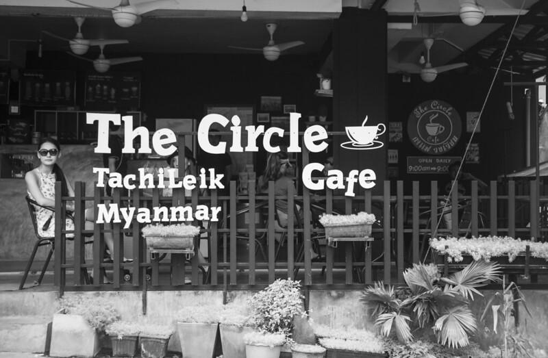
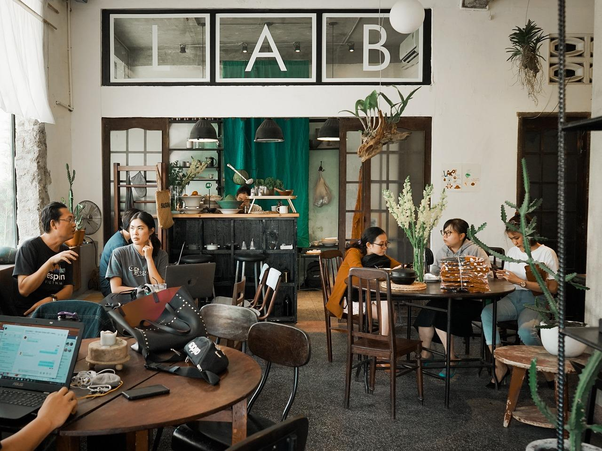
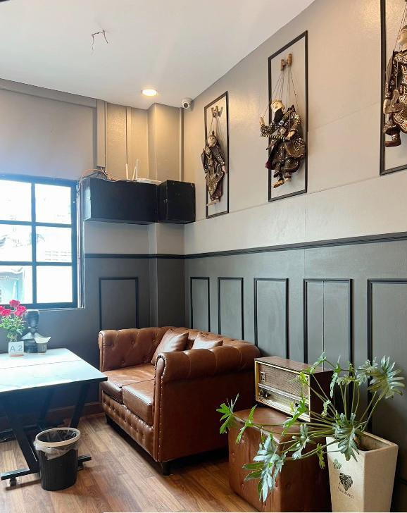

.svg)
.svg)
Places to Hang Out In Tachileik
Looking for somewhere to relax, have fun, or spend time with friends? Explore Tachileik's places to hang out, from cozy cafés and local restaurants to outdoor spaces and recreational spots. There's always somewhere new to discover!

The Circle Café
The Circle Café is a cozy hangout spot in Tachileik, offering a relaxing atmosphere with comfortable seating and a balcony overlooking the surrounding area. It's a nice place to enjoy coffee, spend time with friends, and take in the scenery.

C/LAB
C/LAB is a cozy café in Tachileik with a minimalist atmosphere, making it a pleasant spot to relax, enjoy a cup of coffee, and spend some time with friends. Its calm setting also makes it suitable for a casual catch-up or a quiet break from the busy streets.

Idea Café
Idea Cafe is a casual café in Tachileik, offering a place to take a break, enjoy refreshments, and spend time with friends. Whether you're stopping by for a coffee, grabbing something to eat, or simply looking for somewhere to sit and chat, it provides a convenient option for a relaxed outing. Its location near the Thai-Myanmar border area also makes it a handy stop for visitors exploring the town.
Golden Eagle Golf Country Club
Golden Eagle Golf Country Club is a golf-focused sports club located along Taunggyi-Tachileik Road in Tachileik. It offers a golf-oriented setting for visitors interested in spending time outdoors, enjoying the open surroundings, or playing golf. It's a distinctive recreation option for those looking for something different from the usual cafés and shopping spots.
(Representative golf course image — not an actual photo of Golden Eagle Golf Country Club.)

Places to Hang Out
Find your favorite places to relax, grab a bite, and enjoy good times with friends. Explore Tachileik's cafés, restaurants, and local hangout spots.
Places to Hang Out
Find your favorite places to relax, grab a bite, and enjoy good times with friends. Explore Tachileik's cafés, restaurants, and local hangout spots.
Places to Hang Out
Find your favorite places to relax, grab a bite, and enjoy good times with friends. Explore Tachileik's cafés, restaurants, and local hangout spots.
Places to Hang Out
Find your favorite places to relax, grab a bite, and enjoy good times with friends. Explore Tachileik's cafés, restaurants, and local hangout spots.